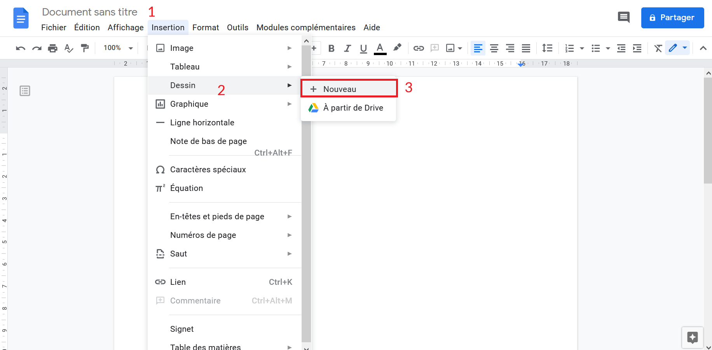
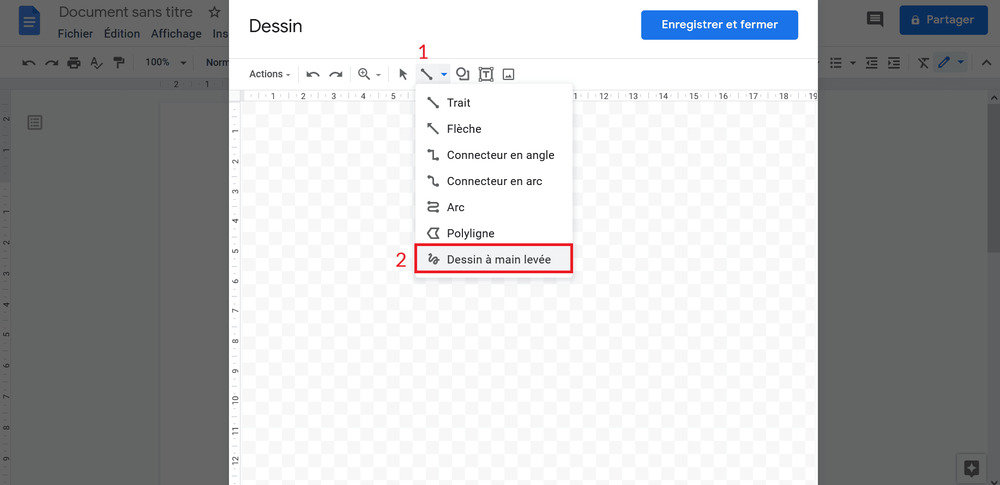
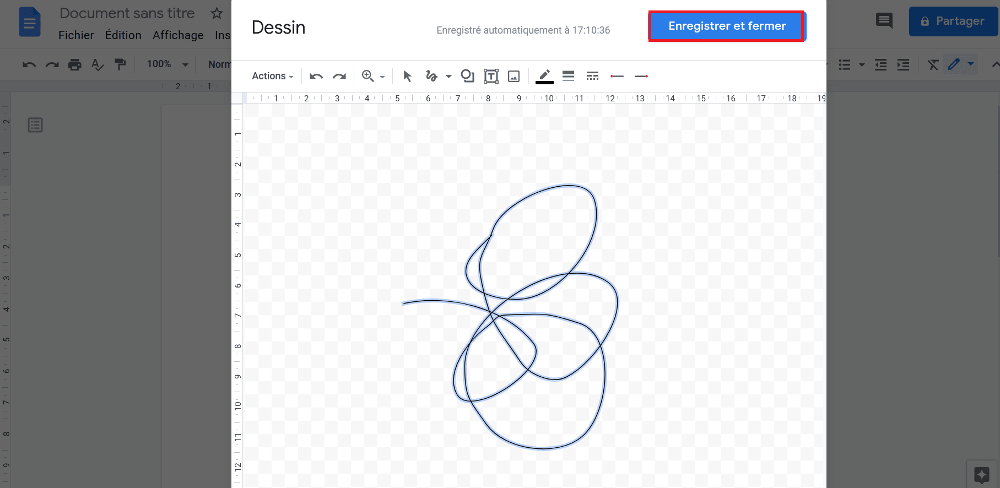
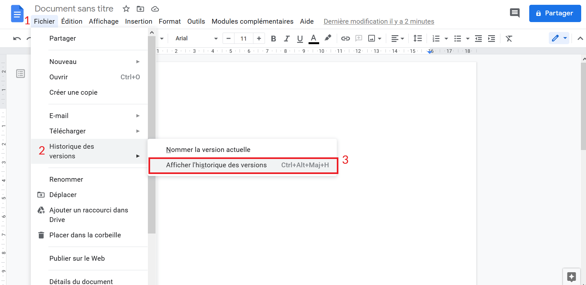
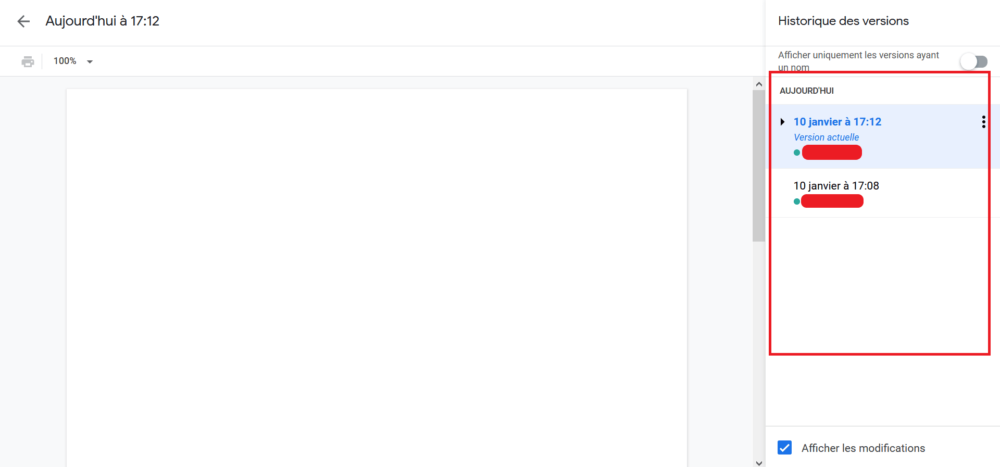
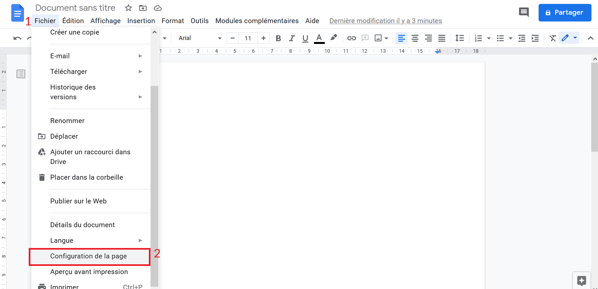
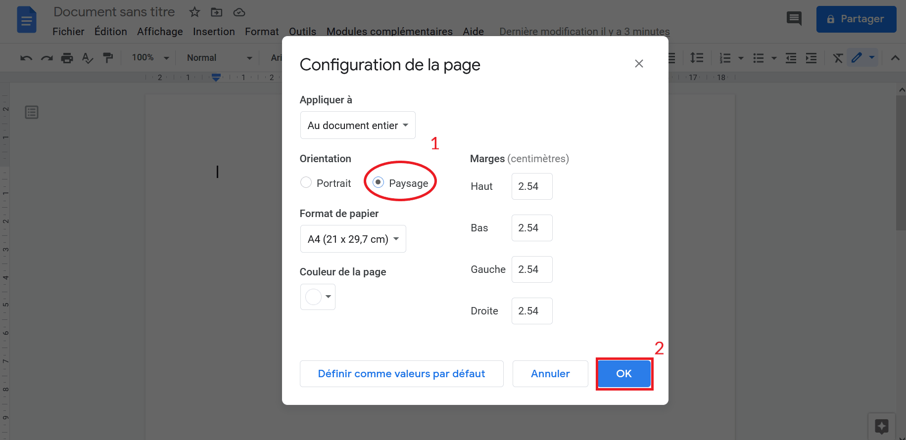
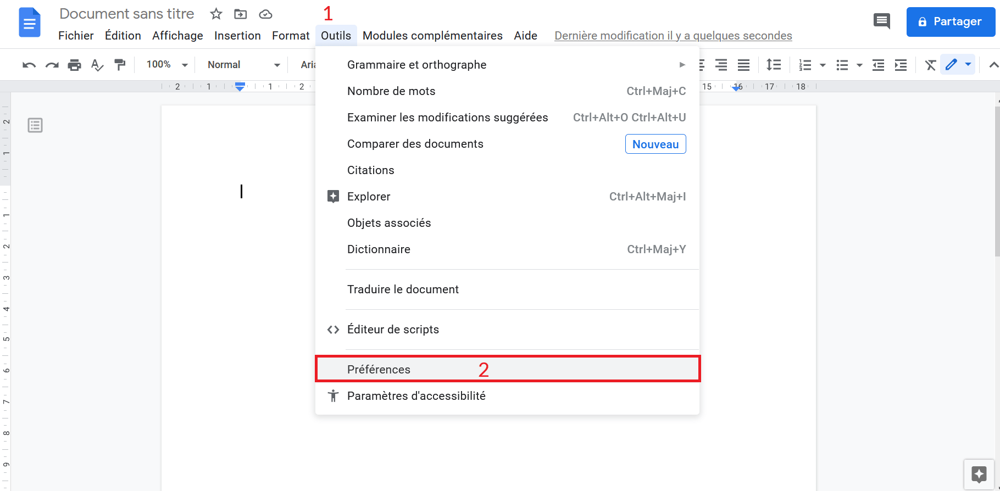
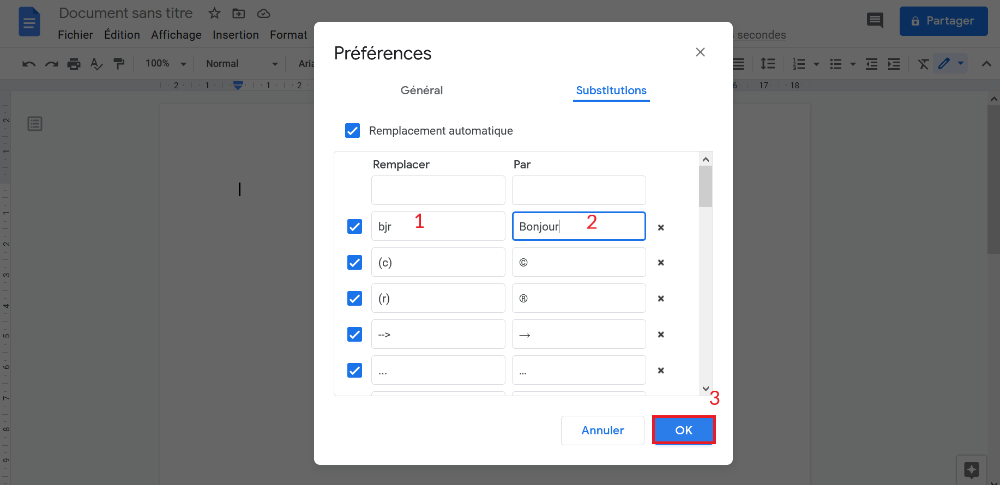

Google Docs est le logiciel de traitement de texte en ligne par excellence. En effet, ses qualités ne manquent pas : accessible, intégré à la suite Google, et surtout gratuit ! Il existe tout de même certaines fonctionnalités “cachées” pour améliorer encore plus votre productivité ! Découvrons donc 6 astuces Google Docs qui boosteront votre productivité.
Signer un document sur Google Docs ✍️
Il vous est déjà arrivé de bloquer sur un document que vous n’arriviez pas à signer ? Quand on connait l’astuce ça parait juste logique. Rendez-vous sur la barre de menu en haut de votre document. Cliquez alors sur “Insertion” > “Dessin” > “Nouveau”. Une nouvelle fenêtre va alors apparaître. Sélectionner ensuite le trait et remplacez-le avec l’option “ Dessiner à main levée ”. Vous pouvez maintenant signer ! ✍️
  Afficher le nombre de mots/caractères 💬
Vous pourriez avoir l’obligation de respecter un nombre déterminé de caractères. La lettre de motivation “Parcoursup” par exemple. Google Docs a une astuce pour ça. Appuyez simultanément sur les touches CTRL + Shift + C. Voilà, une fenêtre apparaît en bas à gauche pour vous indiquer toutes les informations nécessaires. N’oubliez pas de cocher la case « Afficher le nombre de mots lors de la saisie ». 💬
Coller un texte sans en importer les styles📋
Lorsque vous copiez/collez un texte depuis un autre site, la différence de style sera visible ! Pour éviter d’avoir à tout paramétrer, une des astuces de Google Docs le permet ! D’abord, copiez le texte depuis un autre site ( CTRL + C ). Ensuite quand vous allez le coller ( CTRL + V ) faites plutôt ( CTRL + Shift + V.). Cela permet de coller un texte sans ses styles. 📋
Retrouver les anciennes versions du texte sur Google Docs ⌛
Google Docs vous permet de retrouver les anciennes versions de votre texte. Allez dans le menu “Fichier > Historique des versions > Afficher l’historique des versions”. Voilà elles y sont toutes (avec l’heure et la personne qui a modifié) .Copiez ce qui vous semble pertinent ou revenez carrément à une ancienne version ! ⌛
 Mettre le format du document en paysage 🖼️
Google Docs permet cette possibilité via une de ses astuces. Pour le faire c’est très simple : Cliquez sur “Fichier” > “Configuration de la page”. Une nouvelle fenêtre s’ouvre. Sélectionner « paysage » et cliquez sur « OK ». La page est désormais horizontale. 🖼️
 Créer des raccourcis 🔄
Sur smartphone, on utilise souvent des abréviations. Mais dans un document un « bjr » ne fait pas vraiment professionnel. Une astuce est disponible dans le menu de Google Docs. Il suffit d’aller dans le menu puis “Outils” > “Préférences” > et enfin “Substitution”. Dans la colonne « remplacez », vous mettez le raccourci (ex: “bjr”). Dans la colonne « par » vous mettez la signification (ex: “bonjour”). Cliquez enfin sur O.K. L’astuce vous a été utile ?🔄
 J’espère que ces astuces Google Docs vous auront plu. Et surtout qu’elles vous auront été utiles ! N’hésitez pas à partager l’article à vos collègues pour booster leur productivité ! Faites-moi part de votre changement au quotidien après avoir découvert ces fonctionnalités.